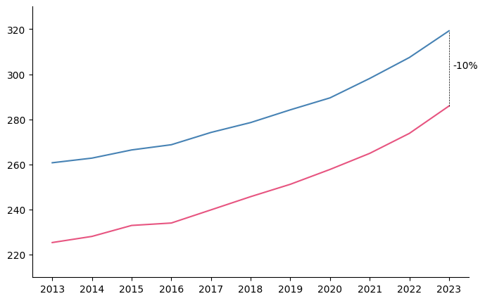
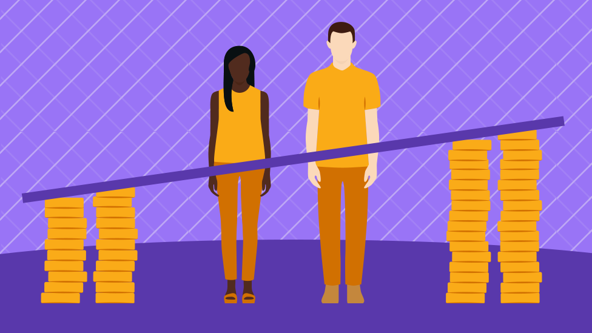

How NOT to calculate gender gaps in wages
analytics
Do not adjust for job type and title. Just don’t.

Edits since 2019
The original version of this post, published in 2019, was primarily aimed at my former students. I have rewritten parts of the post and added some more details to make it accessible and more interesting to a broader audience.
Throughout the world, women earn less than men. In Denmark, hourly wages for private secot employees are about 10% lower for women (Figure 1). There is plenty of world-class labor-economics research trying to explain why this happens. However, in the public arena, most dicussions revolve around a single misguided attempt at analyzing the sources of the gap: Adjusting for endogenous controls.
A typical mistake in assessing gender gaps in earnings is trying to adjust it for endogenous variables, like job title (and type). This mistake is commonly made in public debates, with various pundits claiming that the actual gender gap is much lower that what people report, because we need to compare men and women working in the same position.
This argument is persuasive at a superficial level: that in order to assess whether discrimination actually takes place in the labor market we should compare men and women everything else equal makes sense, intuitively. In reality, assessing the extent of discrimination and quantifying this effect is extremely challenging and complex. This small note does not aim at showing how we can detect discrimination in the labor market. I would refer to a course in advanced labor economics for that. More modestly, this note aims at using an elementary example to debunk this common mistake.
Genesys: And Lo, Men and Women Were Created Equally
Let’s take the extremely simple example of ten working men and ten working women, with the exact same characteristics. Each of the ten men has a level of ability or skill ranging from 1 to 10. Women are generated in exactly the same way. We are in other words in a situation of perfect equality in abilities and skills.
Code
# Simulate
import numpy as np
import pandas as pd
data = {
'ability': list(range(1,11))*2,
'gender': ['male']*10 + ['female']*10,
}
data = pd.DataFrame(data)
data| ability | gender | |
|---|---|---|
| 0 | 1 | male |
| 1 | 2 | male |
| 2 | 3 | male |
| 3 | 4 | male |
| 4 | 5 | male |
| 5 | 6 | male |
| 6 | 7 | male |
| 7 | 8 | male |
| 8 | 9 | male |
| 9 | 10 | male |
| 10 | 1 | female |
| 11 | 2 | female |
| 12 | 3 | female |
| 13 | 4 | female |
| 14 | 5 | female |
| 15 | 6 | female |
| 16 | 7 | female |
| 17 | 8 | female |
| 18 | 9 | female |
| 19 | 10 | female |
The Fall From Eden: Promotions and Wages
At this stage, I decide to promote some of my workers to managerial positions. Obviously anyone with a skill level above 8 will be promoted, these are excellent people, whether they are men or women. However, I need more managers, and for whatever reason (they posture more, they ask for a promotion, they are my drinking buddies) I decide to fill up the remaining managerial positions only with the best of the remaining (mediocre) men.
Then I set wages. As a baseline, I decide to give people a wage equal to twice their ability level if they are managers, and a wage equal their ability level if they are not managers. However, I am also discriminating in wages. So I cut the wage of each woman by 10%.
In other words, I am discriminating against women in two separate ways.
- I do not promote them (ah, the glass ceiling!).
- I pay them less.
Code
data.loc[:, 'manager'] = (data.loc[:, 'ability']>8) | ((data.loc[:, 'gender']=='male') & (data.loc[:, 'ability']>5))
data["wages"] = 0.0
data.loc[:, 'wages'] = data.loc[:, 'ability'] + data.loc[:, 'ability']*data.loc[:, 'manager']
data.loc[:, 'wages'] = data.loc[:, 'wages'] - 0.1*(data.loc[:, 'gender']=='female')*data.loc[:, 'wages']
data/tmp/ipykernel_11182/1262971268.py:4: FutureWarning: In a future version, `df.iloc[:, i] = newvals` will attempt to set the values inplace instead of always setting a new array. To retain the old behavior, use either `df[df.columns[i]] = newvals` or, if columns are non-unique, `df.isetitem(i, newvals)`
data.loc[:, 'wages'] = data.loc[:, 'ability'] + data.loc[:, 'ability']*data.loc[:, 'manager']| ability | gender | manager | wages | |
|---|---|---|---|---|
| 0 | 1 | male | False | 1.0 |
| 1 | 2 | male | False | 2.0 |
| 2 | 3 | male | False | 3.0 |
| 3 | 4 | male | False | 4.0 |
| 4 | 5 | male | False | 5.0 |
| 5 | 6 | male | True | 12.0 |
| 6 | 7 | male | True | 14.0 |
| 7 | 8 | male | True | 16.0 |
| 8 | 9 | male | True | 18.0 |
| 9 | 10 | male | True | 20.0 |
| 10 | 1 | female | False | 0.9 |
| 11 | 2 | female | False | 1.8 |
| 12 | 3 | female | False | 2.7 |
| 13 | 4 | female | False | 3.6 |
| 14 | 5 | female | False | 4.5 |
| 15 | 6 | female | False | 5.4 |
| 16 | 7 | female | False | 6.3 |
| 17 | 8 | female | False | 7.2 |
| 18 | 9 | female | True | 16.2 |
| 19 | 10 | female | True | 18.0 |
Honest Gender Gaps
Code
honest_gg = data.groupby('gender').mean()
hgg = (
honest_gg.loc["female", "wages"] - honest_gg.loc["male", "wages"]
)/honest_gg.loc["male", "wages"]We all agree that there is a sizable amount of gender discrimination in this example. This staggering amount of discrimination should be detectable in my simulated wages. And rightly enough, the raw gender gap between genders is -29.89% – that is, women earn about 30% less than men. This makes sense, as this gap represents the 10% pay cut I gave to each woman, plus an additional component driven by the discrimination in promotions.
“Adjusted” Gender Gaps
Wait wait wait wait wait-a-minute!
Says the clever pundit dude.
Certainly you are making a naïve mistake! Certainly you can’t compare pears and apples! These people are doing different jobs. Certainly you should compare the gender gap within an occupation to obtain the true gender gap!
Well… Let’s see what happens if we compare gender gaps within occupation titles.
Code
adj_gg = data.groupby(['gender', 'manager'])["wages"].mean().reset_index().pivot(columns='gender', index='manager')
adj_gg["Gender gap"] = (
adj_gg.iloc[:, 0]-adj_gg.iloc[:, 1]
)/adj_gg.iloc[:, 1]
manager_gg = adj_gg.loc[True, "Gender gap"].values[0]
nmanager_gg = adj_gg.loc[False, "Gender gap"].values[0]
adj_gg| wages | Gender gap | ||
|---|---|---|---|
| gender | female | male | |
| manager | |||
| False | 4.05 | 3.0 | 0.35000 |
| True | 17.10 | 16.0 | 0.06875 |
Whoa! Here it shows that are actually men being discriminated against! Women make more than men on average in each role. Like, among non-managers, females make a staggering 35% more than men! And even among managers women outearn the men by almost 7%!
See?
Says the clever pundit dude
It’s men who need protection! We are cuddling women too much and now they exploit it and outearn men and men feel sad ☹️
Adjusting for endogenous variable will bias your results
So, how is are these results possible when I was discriminating like a maniac just a few lines above? Well, that’s because we are controlling for an endogenous variable, that is, job title. Because whether you are a manager or not depends not only on your ability but also on your gender, this control introduces a subtle type of bias.
flowchart Gender[Gender] ==> Title(Job title) Gender ==> Wage Ability[Ability] -.-> Title Title ==> Wage(Wage) Ability -.-> Wage linkStyle 0,1,3 stroke:green style Gender fill:#a7f5b4 style Wage fill:#ff8f87
wage on gender identifies the gross effect, i.e. the green flow…flowchart Gender[Gender] ==> Title(Job title) Gender ==> Wage Ability[Ability] ==> Title Title --> Wage(Wage) Ability ==> Wage linkStyle 1 stroke:green linkStyle 0,2,4 stroke:red style Gender fill:#a7f5b4 style Wage fill:#ff8f87 style Title fill:#8ba9fc
job title opens a back-door path through ability (red)job title, but not ability
Figure 2 visualizes the causal relationships in our simulated example. Gender and ability both affect job title and wages. Job title in turn affects wages as well. While ability is inherently unobservable (there are multiple dimensions of ability), job title, wage, and gender are typically observable.
The right panel shows that if we regress wage on gender, i.e. we compute the honest gender gap as in Section 3, what we are actually identify is the full flow of effects going from gender to wage, highlighted in green in the left panel of Figure 2. That’s great! In our example, that’s the direct wage penalty of 10% plus the indirect effect from lower promotion rates.
What happens however once we adjust for job title (shown in blue in the right panel)? Well, then we are blocking the effect going from job title to wages, sure. However, we are also opening a back-door path through ability (shown in red). So the total effect we end up estimating is the direct 10% effect, plus a bias component resulting from the fact that the abilities of workers within each job title–and thereby wages–will depend on gender. Because we are discriminating when promoting.
Confused yet? Let’s look at what happens to the abilities of workers for each job title.
Code
ab_gap = data.groupby(['gender', 'manager'])["ability"].mean().reset_index().pivot(columns='gender', index='manager')
ab_gap| ability | ||
|---|---|---|
| gender | female | male |
| manager | ||
| False | 4.5 | 3.0 |
| True | 9.5 | 8.0 |
Despite men and women being on average absolutely identical in terms of ability, due to our selection and dicrimination into job titles, we get the apparently paradoxical result that women on average outsmart men within each occupation type. And because ability does matter for wages after all, we get a bias in out gender gap estimates: It’s natural that, on average, within each occupation group, women should earn more.
Adjusting for something can be worse than not adjusting at all
Let me stress this point, as it can appear counterintuitive at first. You might think that, intuitively, the more you adjust for stuff, the closest you get to a pure effect.
Nope. If you do not know what you are doing, and do not have a clear mental causal model, blindly adjusting for covariates in a kitchen-sink approach risks doing more harm than good.
Summing up
What should then be the proper measure of gender gap? Well, consider that we have 10 individual of each gender, each of them a doppelganger in terms of ability of each other. So for each doppelganger couple \(j\in{1,\ldots,10}\) we could compare the wage of each woman $ w^{f}_{j}$ with that of her male doppelganger \(w^{m}_{j}\), take the difference in wages, and average these numbers:
\[ \frac{1}{10}\sum_{j=1}^{10}(w^{m}_{j} - w^{f}_{j}) = \frac{1}{10}\sum_{j=1}^{10}w^{m}_{j} - \frac{1}{10}\sum_{j=1}^{10}w^{f}_{j} \]
which is equal to, guess what, the raw difference in average wage -29.89%.
The bottom line is that quantifying discrimination (by gender, race, whatnot) in the labor market is hard. Terribly so.
Interpreting comparisons other than raw gender gaps takes training and expertise, and in most cases such comparisons just muddy the waters and make gender gaps less interpretable. The raw gender gap is instead a very simple yet powerful statistics. It’s easily interpretable, and while everyone agrees it has multiple causes, it’s still highly informative.
So either prepare to discuss your detailed set of assumptions (for example through a DAG) or stick to that.